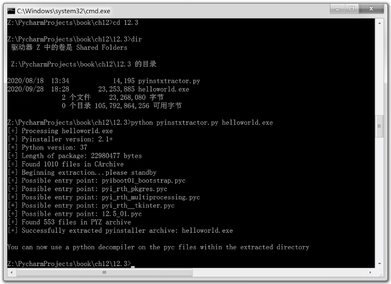
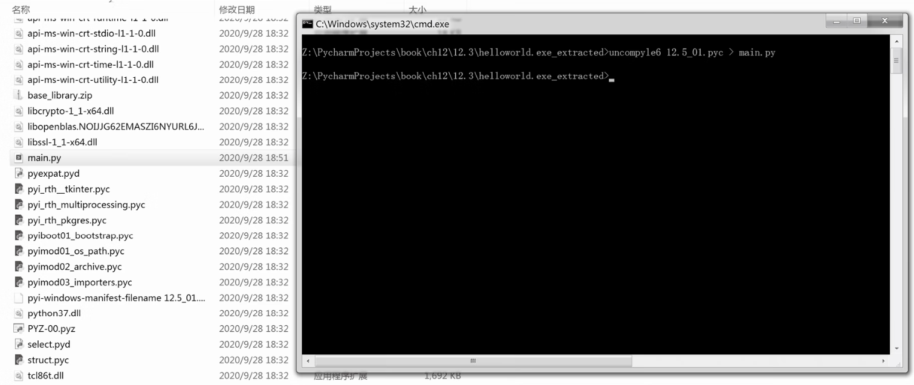

首页 > 编程笔记
Python反编译工具pyinstxtractor.py
计算机反编译是指通过对他人软件的目标程序（比如可执行程序）进行逆向分析和研究，以推导出他人软件所使用的思路、原理、结构、算法、处理过程、运行方法等设计要素，在某些特定情况下可能会推导出源码。
反编译可以作为开发软件时的参考，或者直接用于软件中。
如果找到了一个 Python 3.7 编译的 EXE 文件，则可以使用反编译获取源码，基本过程如下：
此过程需要反编译工具 pyinstxtractor.py，可以到 GitHub 官网下载，地址为：https://github.com/extremecoders-re/pyinstxtractor

图1：GitHub官网中的 pyinstxtractor.py
反编译的具体步骤为：
1) 使用 pyinstxtractor.py 将 EXE 文件转换成 PYC 文件，在命令行界面中输入下面的命令：
解压成功后，同路径下会出现 helloworld.exe_extracted 文件夹，这里面就包含了 PYC 文件。
2) 使用 uncompyle6 将 PYC 文件反编译为 PY 文件。uncompyle6 需要单独安装，安装命令如下：
uncompyle6 12.5_01.pyc > main.py
按下 Enter 键，如图3所示。
成功后，生成 main.py，这样就完成了反编译。
反编译可以作为开发软件时的参考，或者直接用于软件中。
如果找到了一个 Python 3.7 编译的 EXE 文件，则可以使用反编译获取源码，基本过程如下：
- 将 EXE 文件转换成 PYC 文件；
- 反编译 PYC 文件。
此过程需要反编译工具 pyinstxtractor.py，可以到 GitHub 官网下载，地址为：https://github.com/extremecoders-re/pyinstxtractor
图1：GitHub官网中的 pyinstxtractor.py
反编译的具体步骤为：
1) 使用 pyinstxtractor.py 将 EXE 文件转换成 PYC 文件，在命令行界面中输入下面的命令：
python pyinstxtractor.py helloworld.exe
然后按下 Enter 键，如图2所示。

图2：将 EXE 文件转换成 PYC 文件
图2：将 EXE 文件转换成 PYC 文件
解压成功后，同路径下会出现 helloworld.exe_extracted 文件夹，这里面就包含了 PYC 文件。
2) 使用 uncompyle6 将 PYC 文件反编译为 PY 文件。uncompyle6 需要单独安装，安装命令如下：
pip install uncompyle6
安装后，使用 uncompyle6 进行反编译，在命令行界面中输入下面的命令：uncompyle6 12.5_01.pyc > main.py
按下 Enter 键，如图3所示。

图3：使用 uncompyle6 进行反编译
图3：使用 uncompyle6 进行反编译
成功后，生成 main.py，这样就完成了反编译。
关注公众号「站长严长生」，在手机上阅读所有教程，随时随地都能学习。内含一款搜索神器，免费下载全网书籍和视频。

微信扫码关注公众号